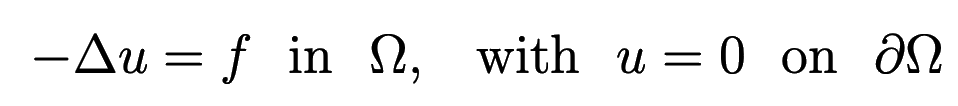
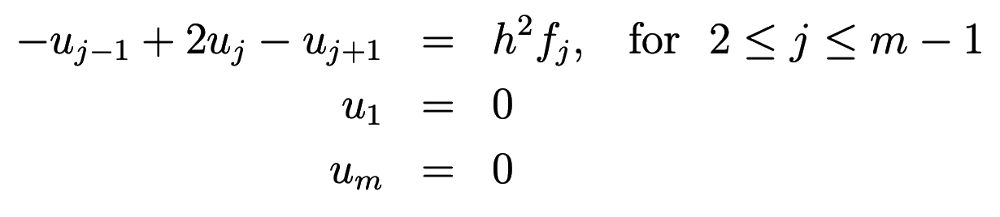
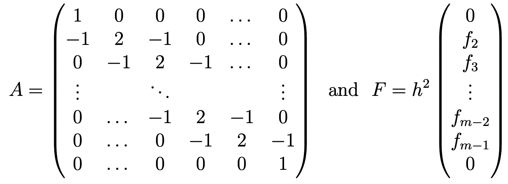
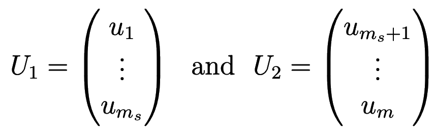
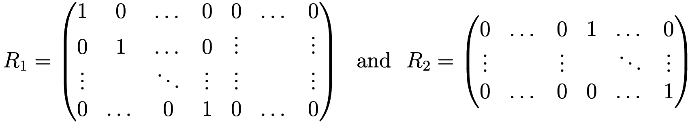
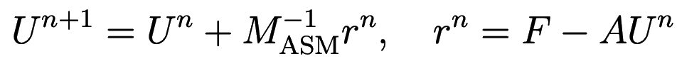
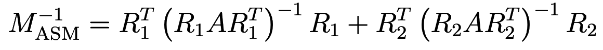

Parallelizing iterative additive Schwarz method
In this section we will implement the iterative additive Schwarz method (ASM) 1 in Julia, starting with a serial version. We will then parallelize it with DistributedArrays.jl.
We will be solving the 1D Poisson problem:

Discretizing this equation on a uniform grid of \(m\) points, we have

or in matrix notation \(AU=F\), where

Let’s break our grid into two domains \(\Omega=\Omega_1\bigcup\Omega_2\), where we are looking for the solution

In matrix notation the solution can be written as \(U_i=R_iU\), where the restriction operator \(R_1\) is a \(m_s\times m\) matrix consisting of two parts of sizes \(m_s\times m_s\) and \(m_s\times(m-m_s)\), and \(R_2\) is a \((m-m_s)\times m\) matrix consisting of two parts of sizes \((m-m_s)\times m_s\) and \((m-m_s)\times(m-m_s)\), respectively:

The iterative additive Schwarz method (eq. 1.30 of 2) lets you compute the next iteration of the solution as

where the matrix

is called the ASM preconditioner.
Serial additive Schwarz method with explicit matrices
Let’s generalize our computation to three 1D domains. For now, we are writing the serial code, so all arrays are local. Also in this first code, we will define matrices explicitly, even though \(A\) is sparse, and \(R_i\) are Boolean matrices. All these shortcomings will be corrected in the parallel code.
For matrix inversion \((R_iAT_i^T)^{-1}\) we will use Julia’s builtin inv() function, but presumably for larger calculations you might want to replace this with your own (more efficient?) code.
For the right-hand side \(F\), we’ll use a constant piece in the middle, mimicking a uniform bar with empty spaces on each end.
m = 21 # total number of points
N = 3 # number of domains
ms = zeros(Int, N) # number of points in each domain
ms[1:2] = [7,7] # number of points in the first two domains, respectively
ms[3] = m - sum(ms)
h = 1.0 / (m-1) # grid spacing
U = zeros(Float64, m, 1); # 0th iteration
F = zeros(Float64, m, 1); # RHS
F[trunc(Int,m/2)-3:trunc(Int,m/2)+3] .= h^2 * 1.0;
A = zeros(Float64, m, m);
A[1,1], A[m,m] = 1, 1
for i in 2:m-1
A[i, i-1] = -1
A[i,i] = 2
A[i, i+1] = -1
end
R1 = zeros(Int32, ms[1], m);
for j in 1:ms[1]
R1[j,j] = 1
end
R2 = zeros(Int32, ms[2], m);
for j in 1:ms[2]
R2[j,ms[1]+j] = 1
end
R3 = zeros(Int32, ms[3], m);
for j in 1:ms[3]
R3[j,ms[1]+ms[2]+j] = 1
end
# compute three terms in the ASM preconditioner
M = transpose(R1) * inv(R1*A*transpose(R1)) * R1;
M += transpose(R2) * inv(R2*A*transpose(R2)) * R2;
M += transpose(R3) * inv(R3*A*transpose(R3)) * R3;
using LinearAlgebra: norm
for iter in 1:50
dU = M * (F-A*U)
global U += dU
println(norm(dU))
end
exact = A \ F; # Julia's left division, i.e. A^{-1}*F
using Plots
plot(1:m, exact, label = "exact")
plot!(1:m, U, label="approximate") # overplot
savefig("serial.png")Serial additive Schwarz method with structures
We will generalize our code to an arbitrary number of domains. Instead of using R1, R2, R3, we will define a structure domainType that will contain the restriction operator for each domain. It could contain other variables and matrices, but for now we don’t need any other elements in it.
Similar to the previous version of the code, here we are still storing all sparse and Boolean matrices as dense matrices, which is Ok only for testing purposes (for real problems these matrices will be large).
m = 21 # total number of points
N = 3 # number of domains
ms = zeros(Int, N) # number of points in each domain
ms[1:2] = [7,7] # number of points in the first two domains, respectively
ms[3] = m - sum(ms)
h = 1.0 / (m-1) # grid spacing
U = zeros(Float64, m, 1); # 0th iteration; will be a distributed 2D array
F = zeros(Float64, m, 1); # RHS; will be a distributed 2D array
F[trunc(Int,m/2)-3:trunc(Int,m/2)+3] .= h^2 * 1.0;
A = zeros(Float64, m, m);
A[1,1], A[m,m] = 1, 1
for i in 2:m-1
A[i, i-1] = -1
A[i,i] = 2
A[i, i+1] = -1
end
struct domainType
R::Array{Int32}
end
domain = Array{domainType, 1}(undef, 3) # 3-element 1D array of domains
M = zeros(Float64, m, m);
offset = [0, ms[1], ms[1]+ms[2]];
for i in 1:3
domain[i] = domainType(zeros(Int32, ms[i], m)) # construct a new object of domainType
for j in 1:ms[i]
domain[i].R[j,offset[i]+j] = 1
end
global M += transpose(domain[i].R) * inv(domain[i].R*A*transpose(domain[i].R)) * domain[i].R;
end
using LinearAlgebra: norm
for iter in 1:50
dU = M * (F-A*U)
global U += dU
println(norm(dU))
end
exact = A \ F;
using Plots
plot(1:m, exact, label = "exact")
plot!(1:m, U, label="approximate")
savefig("serial.png")Parallel additive Schwarz method
Imagine that now we are dealing with a very large problem, and we are breaking it into pieces, with each piece being processed by one worker. Now \(U\) and \(F\) will be 1D distributed arrays split between workers; we’ll implement them with distributed arrays.
Ideally, we would like to partition domain into subdomains with DistributedArrays.jl, and then on each processor use a combination of sparse and Boolean (coded explicitly with indices) matrices to solve the problem. However, at this point DistributedArrays.jl does not seem to support distributed arrays of structures.
At the heart of our implementation is the distributed preconditioner matrix pre. DistributedArrays.jl does not seem to support an uneven distribution of an array across processes, and therefore we are limited to having an equal number of points in all subdomains.
\(A\) is a sparse matrix. While Julia supports sparse matrices, instead we will code it algebraically with indices, so that we don’t have to worry about its distribution among processes.
\(R_i\) is Boolean. The matrix \(R_iAR_i^T\) applies the domain restriction operator \(R_i\) to both rows and columns of \(A\), and the result is coded algebraically with the function fillPre(). It is then inverted locally in each process with invertPre().
\(R_i^T\left(R_iAR_i^T\right)^{-1}R_i\) takes the result of this inversion and puts it as a dense block into the \(m\times
m\) ASM preconditioner \(M^{-1}_\textrm{ASM}\). Each process computes its own dense block and stores it locally inside the distributed preconditioner matrix pre.
Next, we start iterations. In computeUpdate() we compute \(F-AU^n\) as a 1D distributed array tmp, and multiply the preconditioner pre by tmp. Since pre is block-diagonal, this multiplication can be done separately in each process. Finally, we call addUpdate() to update the distributed solution U, again separately in each process.
Big assumptions:
- All distributed arrays are partitioned in exactly the same way, i.e. the same range of indices is assigned to each worker for 1D arrays
U,tmp,dU,F. - The 2D array
preis partitioned purely along the second dimension (columns), i.e. each worker gets an \(m_s\times m_s\) array, and the range of column indices on each worker is exactly the same as for the 1D arrays above.
You can force (2) by replacing the line
pre = dzeros(Float64, ms, m);with the following block
d1 = @spawnat 2 zeros(Float64, ms, ms);
d2 = @spawnat 3 zeros(Float64, ms, ms);
d3 = @spawnat 4 zeros(Float64, ms, ms);
pre = DArray([d1 d2 d3]);Here is the entire parallel code:
N = 3 # number of domains and processes
m = 21 # total number of points; must be a multiple of N
@assert m%N == 0 "m must be a multiple of N"
ms = round(Int, m/N) # the size of each subdomain
h = 1.0 / (m-1) # grid spacing
using Distributed
addprocs(N)
@everywhere using DistributedArrays
U = dzeros(Float64, m, 1); # 0th iteration; a distributed 2D array
tmp = dzeros(Float64, m, 1); # work area array
dU = dzeros(Float64, m, 1); # update array
F = dzeros(Float64, m, 1); # RHS; a distributed 2D array
@everywhere function fillF(data,m,h)
rows = localindices(data)[1]
for iGlobal in rows
iLoc = iGlobal - rows.start + 1
if iGlobal >= trunc(Int,m/2)-3 && iGlobal <= trunc(Int,m/2)+3
data.localpart[iLoc] = h^2 * 1.0;
end
end
end
for w in workers()
@spawnat w fillF(F, m, h)
end
pre = dzeros(Float64, ms, m);
@everywhere function fillPre(data, rank, ms, N)
if rank == 1
data.localpart[1,1] = 1
for iLoc in 2:ms # main diagonal
data.localpart[iLoc,iLoc] = 2
end
for iLoc in 3:ms # above main diagonal
data.localpart[iLoc-1,iLoc] = -1
end
for iLoc in 1:ms-1 # below main diagonal
data.localpart[iLoc+1,iLoc] = -1
end
end
if rank > 1 && rank < N
for iLoc in 1:ms # main diagonal
data.localpart[iLoc,iLoc] = 2
end
for iLoc in 2:ms # above main diagonal
data.localpart[iLoc-1,iLoc] = -1
end
for iLoc in 1:ms-1 # below main diagonal
data.localpart[iLoc+1,iLoc] = -1
end
end
if rank == N
data.localpart[ms,ms] = 1
for iLoc in 1:ms-1 # main diagonal
data.localpart[iLoc,iLoc] = 2
end
for iLoc in 2:ms # above main diagonal
data.localpart[iLoc-1,iLoc] = -1
end
for iLoc in 1:ms-2 # below main diagonal
data.localpart[iLoc+1,iLoc] = -1
end
end
end
for (rank,w) in enumerate(workers())
@spawnat w fillPre(pre, rank, ms, N)
end
@everywhere function invertPre(data)
data.localpart = inv(data.localpart)
# println(data.localpart)
end
for w in workers()
@spawnat w invertPre(pre)
end
@everywhere function computeUpdate(data, F, U, ms, rank, N, tmp, dU)
# (1) compute tmp = (F-A*U)
if rank == 1
tmp.localpart[1] = F.localpart[1] - U[1]
# for rank==1 we always have iGlobal = iLoc
for iLoc in 2:ms
tmp.localpart[iLoc] = F.localpart[iLoc] + U[iLoc-1] - 2*U[iLoc] + U[iLoc+1] # last one has U[ms+1] => domains communicate
end
end
if rank > 1 && rank < N
iGlobal = (rank-1)*ms
for iLoc in 1:ms
iGlobal += 1
tmp.localpart[iLoc] = F.localpart[iLoc] + U[iGlobal-1] - 2*U[iGlobal] + U[iGlobal+1]
end
end
if rank == N
iGlobal = (rank-1)*ms
for iLoc in 1:ms-1
iGlobal += 1
tmp.localpart[iLoc] = F.localpart[iLoc] + U[iGlobal-1] - 2*U[iGlobal] + U[iGlobal+1]
end
tmp.localpart[ms] = F.localpart[ms] - U[rank*ms]
end
# (2) compute pre*tmp
dU.localpart = data.localpart*tmp.localpart
if rank == 1
println(norm(dU.localpart))
end
end
@everywhere function addUpdate(U, dU)
U.localpart += dU.localpart
end
@everywhere using LinearAlgebra: norm
for iter in 1:50
@sync for (rank,w) in enumerate(workers())
@spawnat w computeUpdate(pre, F, U, ms, rank, N, tmp, dU)
end
@sync for w in workers()
@spawnat w addUpdate(U, dU)
end
end
using Plots
Ulocal = zeros(Float64, m, 1);
Ulocal .= U
plot(1:m, Ulocal, label="approximate")
savefig("parallel.png")Ulocal is necessary since the plot() function won’t take the distributed array U as an argument.